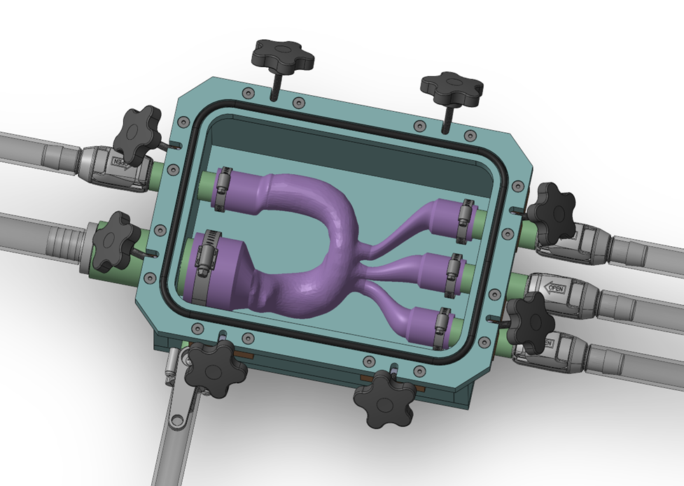
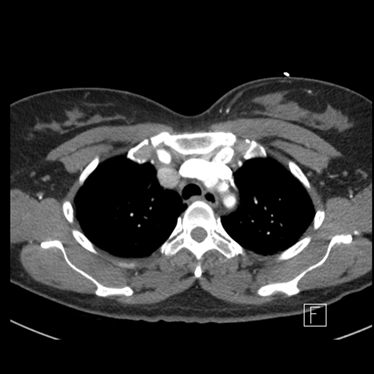
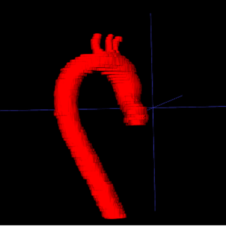
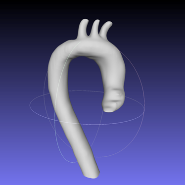

Abstract
Transcatheter aortic valve replacement (TAVR) is a minimally invasive alternative to open-chest surgery for aortic valve disease, yet reliable bench-scale data remain important for validating computational hemodynamics. This work develops a patient-specific aorta phantom engineered to approach tissue-like mechanical behavior for flow testing and flow visualization in support of TAVR-oriented studies. Measurements on the phantom are intended to validate physics-informed neural network (PINN) fluid models of the aorta. Anatomical geometry was extracted by segmenting clinical CT volumes in ITK-SNAP and translating the result into a manufacturable model. The phantom was fabricated by stereolithography (SLA) with materials selected for appropriate compliance and process compatibility, then housed in a sealed box that can be pressurized to mimic physiological aortic pressures during experiments. The integrated fixture provides a platform for controlled hemodynamic characterization and visualization, complementing PINN-based predictions.
Team
Glen Gaige
glen.gaige@mail.mcgill.caYingtong Luo
yingtong.luo@mail.mcgill.caElaine Yang
dingyue.yang@mail.mcgill.caProject Advisor
Prof. Rosaire Mongrain
Professor of Mechanical Engineering at McGill University
rosaire.mongrain@mcgill.caExperimental Assembly
Complete phantom test fixture: printed aorta model, fluid path, and pressurizable housing for bench-scale flow studies.

Aorta Geometry Workflow
Patient-specific anatomy was recovered from imaging in three stages: clinical CT slices provide the contrast data; segmentation in ITK-SNAP isolates the aortic lumen and wall; surface cleanup and meshing yield a closed STL solid suitable for SLA printing. The panels below read left to right in that order.
-

Raw CT
Input tomography; Hounsfield contrast defines soft tissue and lumen boundaries.
-

Aorta segmentation
Label map from ITK-SNAP extracts the target vessel from the volume.
-

Print-ready STL
Post-processed surface mesh for slicing and stereolithography (SLA) printing.
Interactive aorta geometry (STL)
Rotate the print-ready surface mesh in 3D: drag to orbit, scroll or pinch to zoom, right-drag (or two-finger drag) to pan.
Acknowledgements
We are grateful to Professor Richard L. Leask of the Department of Chemical Engineering at McGill University for generously sharing the aorta model that informed our phantom geometry. Our thanks also go to Mr. Sam Minter at the Wong Machine Shop for skilled machining support throughout fabrication. Finally, we thank the MECH463 teaching assistants for their thoughtful feedback and constructive suggestions on successive iterations of this project.